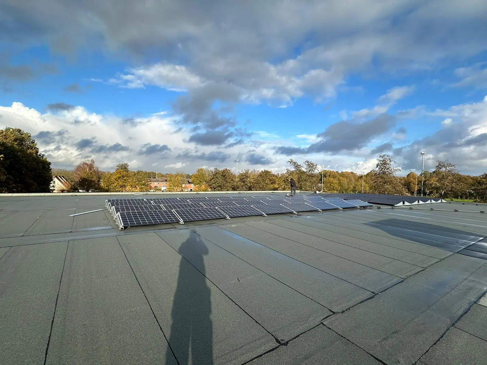
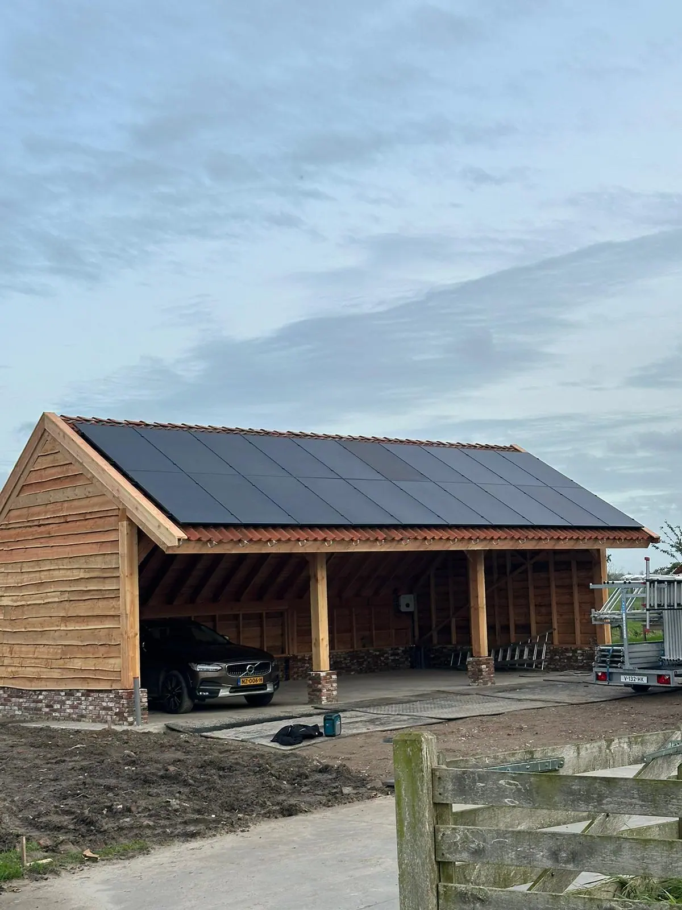
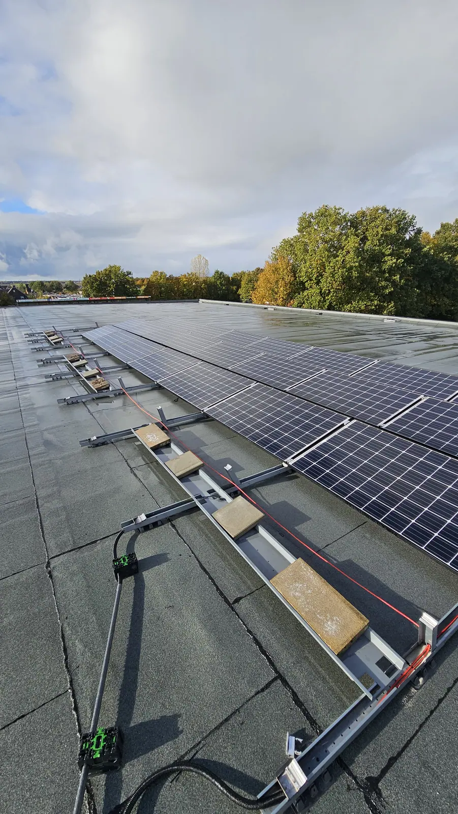
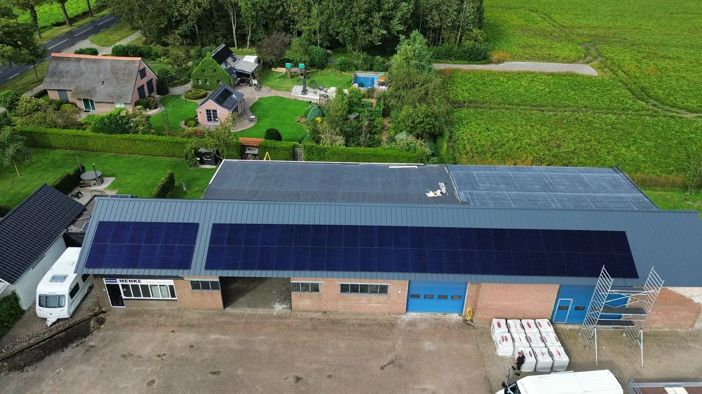
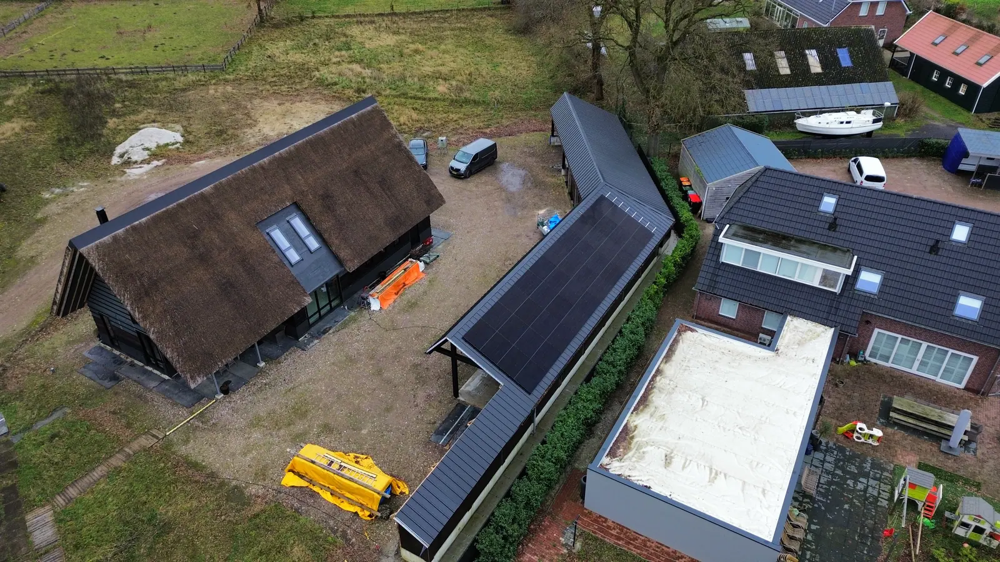
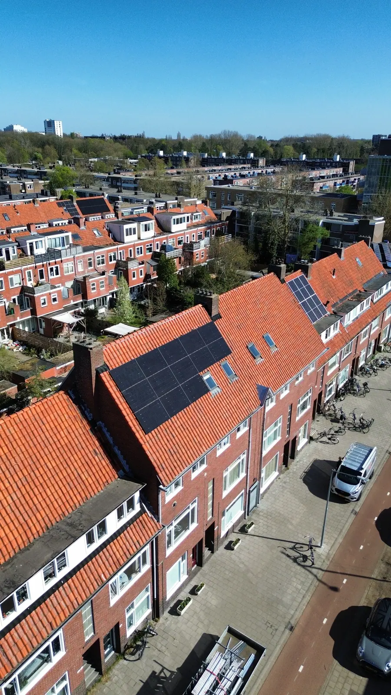

Zonnepanelen laten plaatsen in Emmen
Zonnepanelen laten plaatsen op een schuin of plat dak? Oosterveld verzorgt advies, montage en de aansluiting op je meterkast, voor woning en bedrijfspand.
Zonnepanelen laten plaatsen in Emmen en omgeving
Oosterveld verzorgt de complete installatie van zonnepanelen, van advies en ontwerp tot de aansluiting op je meterkast. Op een schuin of plat dak, voor een woning of een bedrijfspand.
- Advies en ontwerp op basis van jouw dak en verbruik
- Montage op schuin en plat dak
- Aansluiting op de meterkast en groepenkast
- Voor woningen en bedrijfspanden
- Eventueel voorbereiding op een thuisbatterij

Voor elk type dak
Elk dak is anders. Dit zijn de situaties waarin we zonnepanelen plaatsen.
Plat dak
Panelen op montagerails op een plat dak, bijvoorbeeld bij woningen en bedrijfspanden.
Schuin dak
Zonnepanelen op een pannendak of ander schuin dak, ook bij nieuwbouw.
Carport en bijgebouw
Panelen op een carport, schuur of ander bijgebouw.
Bedrijfspand en hal
Grotere installaties op bedrijfsdaken en hallen.
Waar we samen naar kijken
Dak en richting
Type dak, dakbedekking, richting en schaduw bepalen de opbrengst.
Aantal panelen
Hoeveel panelen passen er en hoeveel heb je nodig voor je verbruik?
Aansluiting
1-fase of 3-fase en de capaciteit van je meterkast en groepenkast.
Slimme meter
Of er al een slimme meter is en hoe de opbrengst wordt gemeten.
Thuisbatterij
Nu al plaatsen of later toevoegen: we houden daar rekening mee.
Waarom nu over zonnepanelen nadenken?
Vanaf 1 januari 2027 stopt de salderingsregeling. Daardoor wordt het steeds belangrijker hoeveel van je eigen zonnestroom je zelf gebruikt. Een thuisbatterij kan daarbij helpen. We denken graag met je mee over wat bij jouw situatie past. Meer informatie vind je bij de Consumentenbond en bij de Rijksoverheid.
Zonnepanelen op allerlei daken
Plat dak, schuin dak, carport, bijgebouw en bedrijfshal: een selectie van onze installaties.









Wat klanten zeggen
Reviews van klanten van Oosterveld.
“Een betrouwbare, deskundige en klantgerichte vakman, dat is Jasper! Na veel wisselende ervaringen, eindelijk een vakman gevonden die doet wat hij zegt en zegt wat hij doet.”
“Oosterveld Installaties levert uitstekend vakmanschap. Jasper is deskundig en werkt zeer secuur, met oog voor detail. Alles wordt netjes en professioneel afgewerkt en hij denkt goed mee over de beste oplossingen.”
“Super snelle reactie op mijn aanvraag op Werkspot, snel een afspraak, keurig werk en wederom snel een factuur. Absoluut een aanrader! Dank je wel Jasper voor je werk.”
“Netjes gewerkt, goede adviezen, ze mogen vaker komen.”
Veelgestelde vragen
Plaatsen jullie zonnepanelen op een plat dak en op een schuin dak?
Ja, wij plaatsen zonnepanelen op plat en schuin dak, voor woningen en bedrijfspanden, inclusief aansluiting op de meterkast.
Wat is de beste richting voor zonnepanelen?
Een dak op het zuiden levert de meeste opbrengst, maar ook oost-westopstellingen werken goed. We bekijken jouw dak, schaduw en verbruik en geven advies.
Hoeveel zonnepanelen heb ik nodig?
Dat hangt af van je stroomverbruik en de beschikbare dakruimte. We adviseren op basis van jouw situatie. In ons formulier kun je ook ‘advies gewenst’ kiezen.
Kan ik later een thuisbatterij toevoegen?
Ja. Bij de aanleg houden we daar graag rekening mee. Lees meer op thuisbatterij installeren.
Hoe vraag ik een richtprijs of offerte aan?
Via het formulier op deze site, per WhatsApp of telefonisch. Je krijgt eerst een richtprijs. Daarna komen we bij je langs voor de opname en ontvang je een definitieve prijs.
Klaar voor je richtprijs?
Vul je wensen in en ontvang snel een richtprijs. Daarna komen we langs voor een vaste prijs.